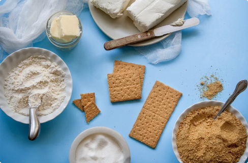
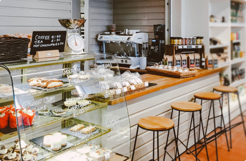

Ogari Pagari saamiseks võta 2 suurt sõpra, sega kokku positiivses keskkonnas. Lisa kuhjaga küpsetamishimu ja näpuotsaga agarust ning salajaseks koostisosaks on katsetamisjulgus!


Meie kohvik
Meie hubane kohvik Tartus Nisu tänaval ootab kõiki juba varajastest hommikutundidest. Regulaarseid kliente ootab juba enne nende tulekut lemmiksaiake ja kuum kohvitops.